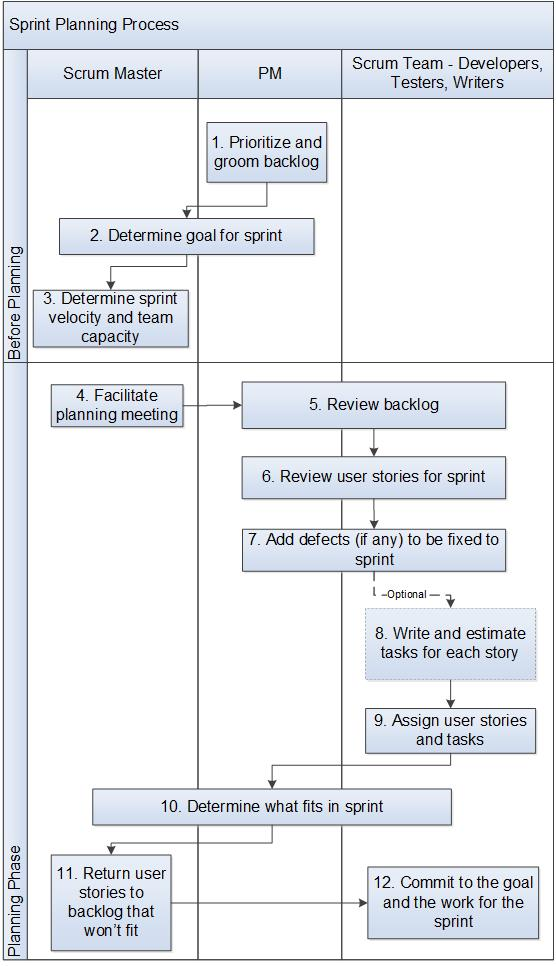

Sprint Planning Process¶
This process describes the planning meeting held at the beginning of every sprint.
Entry Criteria |
A sprint is starting. There are stories in the backlog. |
Inputs |
|
Exit Criteria |
A prioritized list of committed stories and defects by the team. Each committed story has an estimate and at least one task. A commitment by the team to the goals and work for the sprint. |
Outputs |
|
Activities¶

Step # |
Activity Name |
Description |
|---|---|---|
1 |
Prioritize and groom backlog |
The Product Manager(PM) prioritizes and grooms the backlog continuously through the program. Ideally, the PM prioritizes at least one sprint ahead, allowing the team to pull the next most important story if they finish all work planned for a sprint. Backlog grooming: An ongoing process whereby the product owner or customer manages the product backlog based on information gathered in the feedback cycles inherent to agile practices. The activities of backlog grooming can include: adjusting rank; breaking down stories that are going to be worked on in the next few iterations; creating new stories; updating existing stories; deleting obsolete stories; elaborating acceptance criteria. Note: iterations = sprints. |
2 |
Determine goal for sprint |
The PM and Scrum Master determine a goal for the sprint (e.g. performance, user experience, defect reduction, etc.) |
3 |
Determine sprint velocity and team capacity |
Sprint velocity is measured in story points. For initial sprints, the Scrum master estimates the team velocity. Team capacity is the number of available working hours for each team member in the sprint. After a few sprints, the team should understand how many story points they can accomplish in sprint. |
4 |
Facilitate the planning meeting |
The Scrum Master facilitates the planning meeting. |
5 |
Review backlog |
The team decides on the user stories in the backlog that need to go into the sprint. |
6 |
Review stories for sprint |
The team works with the PM to come to a common understanding of the user stories for the sprint and includes:
The team breaks down stories into smaller stories that will fit in a single sprint. This may be started before the planning meeting. The team and PM agree on the acceptance criteria for each story. Acceptance criteria define the functionality, behavior, and performance required by the user story for it to be accepted by the PM. |
7 |
Add defects (if any) to be fixed to the sprint |
The PM and team add defects that need to be fixed in the sprint. |
8 |
(Optional) Write and estimate tasks for each story |
Tasks state how something is to be done. Unlike user stories, tasks are not written from the user perspective. Team members write tasks for each user story. The tasks are estimated in hours. Task writing may be started before the planning meeting. Even if tasks are written before the meeting, tasks should be reviewed in the meeting to catch any missing work. New or interesting stories may be done together during the meeting. The Scrum Master sets expectations for the size of tasks. Best practice is for tasks to be no more than one day each. |
9 |
Assign stories and tasks |
Depending on the team’s practice, the team may self-assign stories or tasks, if any. As part of the task assignment, the team verifies if the tasks are correct, have owners, and task estimations. |
10 |
Determine what fits in the sprint |
The Scrum Master, PM and team look at what can be done in the sprint based on sprint velocity and the team’s capacity, and the time available from each team member. The group makes trade offs as needed. |
11 |
Return stories that won’t fit |
Any stories that won’t fit in the sprint are returned to the backlog and prioritized. |
12 |
Commit to the goal and the work for the sprint |
The team commits to the goal of the sprint and to the work in the sprint. |
Change Log¶
Date |
Change Request ID |
Version |
Change By |
Description |
05/21/2020 |
N/A |
0.1 |
Shree Vidya Jayaraman |
Initial Draft |
06/01/2020 |
N/A |
0.2 |
Shree Vidya Jayaraman |
Updated based on Doina’s feedback |
06/08/2020 |
N/A |
0.3 |
Shree Vidya Jayaraman |
Updated based on Doina’s feedback |
06/22/2020 |
N/A |
0.4 |
Shree Vidya Jayaraman |
Updated based on Doina and Rodger’s feedback |